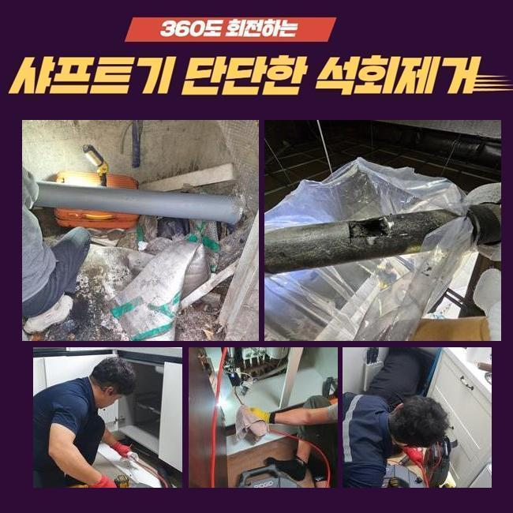
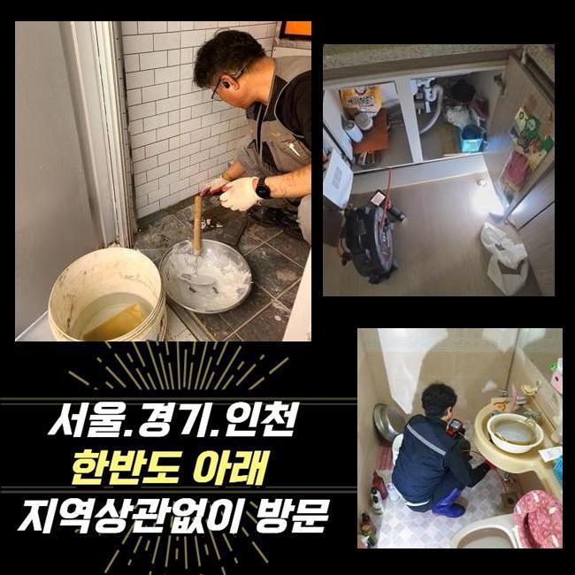
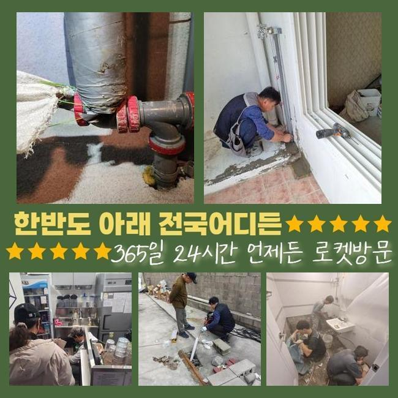
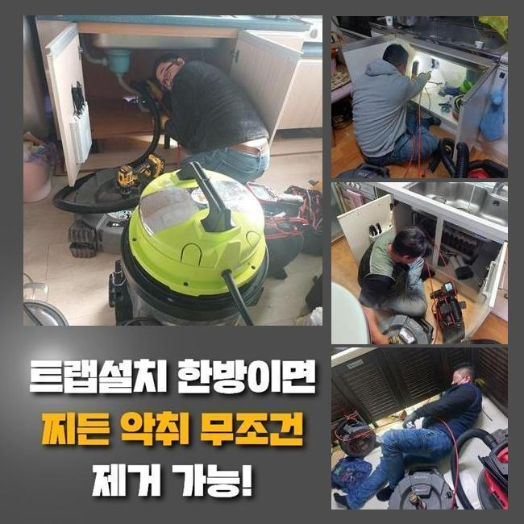
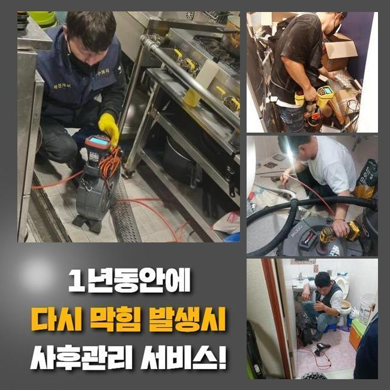
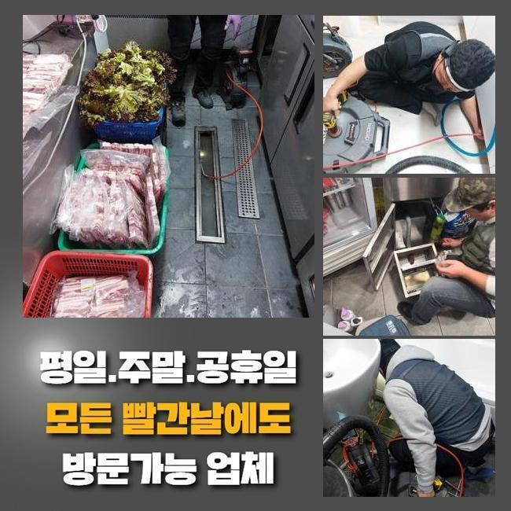
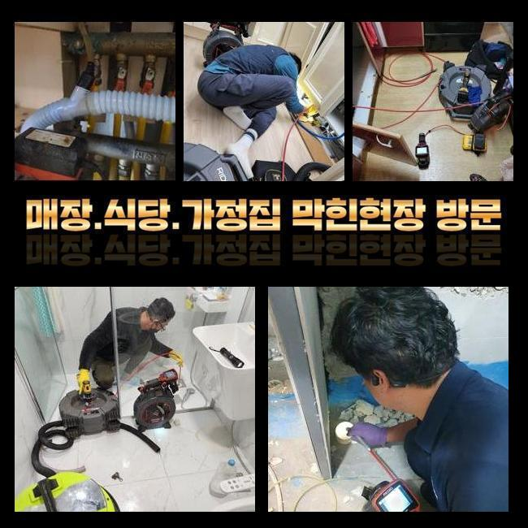

🏠 계양구 계산동오수관막힘 이화동 배관뚫기 설비
용인시 처인구 배관막힘 전문 시공 후기

📋 작업 개요
- 위치: 용인시 처인구, 수원시 영통구, 화성시 동탄
- 서비스 유형: 배관막힘, 하수구청소, 고압세척, 내시경점검
- 작업 일시:
- 업체명: 하수구수사대 (010-5615-2118)
🔍 문제 상황
계양구 계산동오수관막힘 이화동 배관뚫기 설비
평일과 공휴일 언제라도 배수관막힘이 확인되면 빠르게 방문 후 근본적인 이유를 파악 후 빠르게 조치해드리는 전문팀입니다
오늘 볼 사례의 고객님이 문의주신 건은 빌라 단지에서 주차공간으로 역류가 발생한다고 서둘러 찾아뵙게 되었어요
주차구역에서 물이 솟구치면 세워져 있는 차량들에 피해가 확대될 수 있어서 최대한 빨리 작업장에 도착하였습니다
현장으로 가보니 의뢰를 요청하신 의뢰인은 하수관로막힘 현장을 가리키면서 이전에는 이런 상황은 아니었다며 의아한 표정을 보이셨습니다
불현듯 배수구 역류상황이 일어나 악취가 너무나 심각한 상태였습니다
의뢰장소를 직접 지켜보다 보니 주차구역 여기저기 기름투성이인 하수가 번져나가기 시작했어요
빌라 단지의 하수관막힘의 경우 입주자들이 이용중인 온갖 다양한 생활 폐수가 이유인 경우가 많아 불쾌한 냄새 또한 강할 수 밖에 없어요
무엇보다 우천시에는 그 역한 냄새가 근처의 다른 집들에게까지 전달될 수 밖에 없어요

🔎 원인 분석
💡 전문가 진단: 정밀 진단 장비를 사용하여 슬러지의 고착 여부를 판명하고 타격/세척 작업을 실시했습니다.
비가 쏟아지면 배수구의 통수를 저해하여 역류문제를 빈번히 야기하게 하며 불쾌한 냄새를 더 격화시킵니다
그 결과 이웃들은 창을 열어 환기 작용을 할 수 없으므로 실내 환경의 공기가 좋지 않게 됩니다
이와 같은 사안을 막기 위해서는 규칙적인 배수구 체크와 청소작업을 해야합니다
따라서 무엇보다 전문적인 능력과 도구를 운용해 빠르고 올바르게 조치할 수 있는 업체가 필요해요
물이 흘러넘치는 위치를 보니 커다란 슬러지 덩이가 배수로 출구지점을 막고 있는 것이 확실했습니다
육안으로 확인되는 곳은 간단히 처리가능 하지만 직접 볼 수 없는 배수관 안쪽은 고성능 기기와 배관전문업체의 전문기술로 조치할 수 있어야 합니다
현장에 도착하자마자 처리하겠다고 장치를 투입하며 덤빌 것이 아니라 세세하게 요인을 확인하는 것이 반드시 필요합니다
우선 빌라 아래의 주차장소에 있는 차를 먼저 긴급하게 다른 주차장으로 이동하여 주차했습니다
공용 배관이 막히게 되면 이렇게 주차장소 밑바닥으로 물이 넘쳐나오며 주차된 차량까지 위험에 빠지는 사태로 이어집니다
낮은층에서 하수관로를 쓰거나 상층에서 이용하셔도 같은 일이 발생하게 됩니다

🔧 작업 과정
한번에 여러세대가 이용한다면 상당한 양의 물이 흐르게 됩니다
기본 고압온수세척은 끝냈습니다
바닥면에 있는 배수구배관은 클리닝이 된 상태인데도 조금 떨어져 있는 하수집수정에서 물이 빠지지 않고 멈춰있습니다
두번째 고압온수세척을 수행해야하는 상황이에요
맨홀 내부에는 주 배수관이 여러개 설치되어 있습니다 이 가운데서 하수파이프를 확인하여 고압온수세척 실시를 해야합니다
전문팀은 어느 배수로가 중심 하수관인지 쉽게 파악 가능합니다
한번 더 고압수 클리닝을 수행합니다 윗부분에서 확인한 오염된 하수가 흐르고 있어요
하수관로막힘 대체적인 사유는 하수관으로 유입된 기름기와 불순물로 막힘이 발생하는데 이 방식은 고압 온수 세척기로 강한 물살을 활용하여 하수파이프 속을 말끔하게 클리닝합니다
고압온수세척 진행을 하면 배수로 내에 눌러붙은 찌꺼기가 잔존하지 않고 외부로 모조리 배출되고 하수관 속은 처음과 같은 하수관 상태로 변화합니다
고압 물세척 작업을 수행하면 노란 기름 덩어리가 외부로 방출되는 생생한 현장을 눈으로 직접 볼 수 있어요
노란색 물체가 전부 기름 슬러지예요 기름 성분의 덩이들이 하수도 속 안을 꽉 채우게 되고 그 결과 물이 솟구치게 됩니다
한번 더 배수구 맨홀 속에서 고압세정작업을 실행하고 나니 맨홀 내부에 있던 슬러지 뭉치들도 견디지 못하고 사리지고 있습니다
마침내 대단지 빌라의 공용 배수로 고압세정작업을 완료해 드렸습니다
물이 올라오던 모습은 확실히 사라졌습니다 끝으로 주변을 깨끗이 정돈하는 일이 남아 있습니다
배수구막힘이 뚫고나서 주변을 무결하게 정돈하는 것까지가 막힘시공에 포함됩니다
주차구역에서 맨홀 부근까지 거리는 30미터쯤 됩니다 주차장소에서 도로 근처를 고압수로 청소를 한 차례 실시 후 끝냅니다


✅ 작업 완료
마지막 순서로 하수관로 세정이 확실히 완료되었는지 배수구 내시경 카메라 장비로 확인을 실시합니다
저희 기술자가 작업을 완료할 때 가장 우선시하여 생각하는 사항입니다
전문적인 기사의 뛰어난 판단력과 최신 청소 도구 그리고 능숙한 작업 세가지 조합이 잘 맞춰져 있어야 하수관막힘을 수리하는 비결인데 마지막 배수관 내시경 카메라 장치로 올바르게 진행이 되었는지 점검하는 것이 핵심이므로 필히 전문 장치를 보유한 전문팀을 선정하길 권장합니다
우리 업체로 의뢰하시면 항상 상세한 안내과 지원 도와드리겠습니다




⚠️ 하수구 배관 막힘 예방 및 관리 가이드
- ✅ 머리카락, 비닐, 물티슈 등 물에 분해되지 않는 이물질은 절대 흘려보내지 마세요.
- ✅ 기름기 많은 식기는 설거지 전 키친타올로 먼저 기름때를 닦아내세요.
- ✅ 주기적으로 배수구에 뜨거운 물을 가득 부어주어 유지방 고착을 방지하세요.
- ✅ 작업 후 1년 이내 재발 시 무상 A/S 보증 서비스를 제공합니다.
💡 핵심 정리
- 확실한 장비 작업(내시경 점검 및 샤프트 스케일링)으로 원인을 뿌리 뽑습니다.
- 작업 후 1년 이내에 동일한 부위 재발 시 100% 무상 A/S 서비스를 보장합니다.
- 서울 · 경기 · 인천 전 지역에 24시간 언제든 긴급 출동할 수 있도록 항시 대기 중입니다.
❓ 자주 묻는 질문 (FAQ)
🚨 용인시 처인구 배관막힘 문제로 고민이신가요?
정확한 원인 진단과 확실한 시공으로 재발 없는 해결을 약속드립니다.
24시간 긴급 출동 | 서울 · 경기 · 인천 전지역 | 1년 내 재발 시 무상 A/S